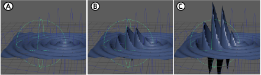

“融合衰减”(Blend Falloff)属性编辑器构件包含一个表，您可以在其中添加各种衰减效果，然后将它们组合在一起以生成复杂的结果。
两个基本体衰减在波浪变形器上融合
访问“融合衰减”(Blend Falloff)属性编辑器构件
使用“添加新指定”(Add New assignment) 、“移除指定”(Remove assignment) 、“上移”(Move Up) 和“下移”(Move Down) 图标来组织表中的衰减效果。
在行上单击鼠标右键以添加新衰减或指定现有衰减。
若要解除锁定，请单击鼠标右键，然后选择“解除锁定属性”(Unlock Attribute)。
每个顶点的值由“基础权重”(Base Weight)定义，默认值为 1.0。
每个顶点的衰减值修改以前计算的所有值。例如，如果到目前为止计算的值为 A，为衰减计算的值为 B，则新结果为以下模式之一：A、(A*B)、(A/B)、(A+B)、(A-B)、B 或 max(A,B)。
| 名称 | 行为 |
|---|---|
| 无运算(No Operation) |
在不进行任何更改的情况下应用基础权重值 (B)，忽略衰减，就像未连接衰减一样。 这是默认设置。 示例公式：A（无效果） |
| 相乘(Multiply) |
通过将衰减权重 (A) 乘以基础权重值 (B) 来创建放大效果，如以下公式中所示： 衰减融合结果 = 基础权重 x 变形器衰减权重。 例如，将值设置为 0 与禁用效果是一样的。值为 1 时的效果对变形不进行任何更改，而值为 2 会使效果加倍，依此类推。 示例公式：A*B |
| 相除(Divide) | 将衰减权重 (A) 除以基础权重值 (B)。
示例公式：A/B |
| 相加(Add) | 将衰减权重 (A) 与基础权重值 (B) 合并。
示例等式：A+B

“相加”(Add)模式应用于基本体衰减 A。设置为 0，B。设置为 10，C。设置为 25 |
| 相减(Subtract) | 衰减权重 (A) 的效果减去基础权重值 (B)。
示例公式：A-B |
| 覆盖(Override) | 在不进行任何更改的情况下应用衰减权重值 (A)，忽略基础权重值 (B)，就像没有基础权重一样。
示例公式：B |
| 最大值(Max) | 使每个基本体衰减权重值 (A) 独立影响网格。页面顶部的动画显示了使用“最大值”(Max)模式的两个基本体衰减。
示例公式：max(A,B) |
| Alpha 融合(AlphaBlend) | 用于创建衰减权重的 Alpha 融合。
示例公式：out = out*(1-in) + in*inValue |